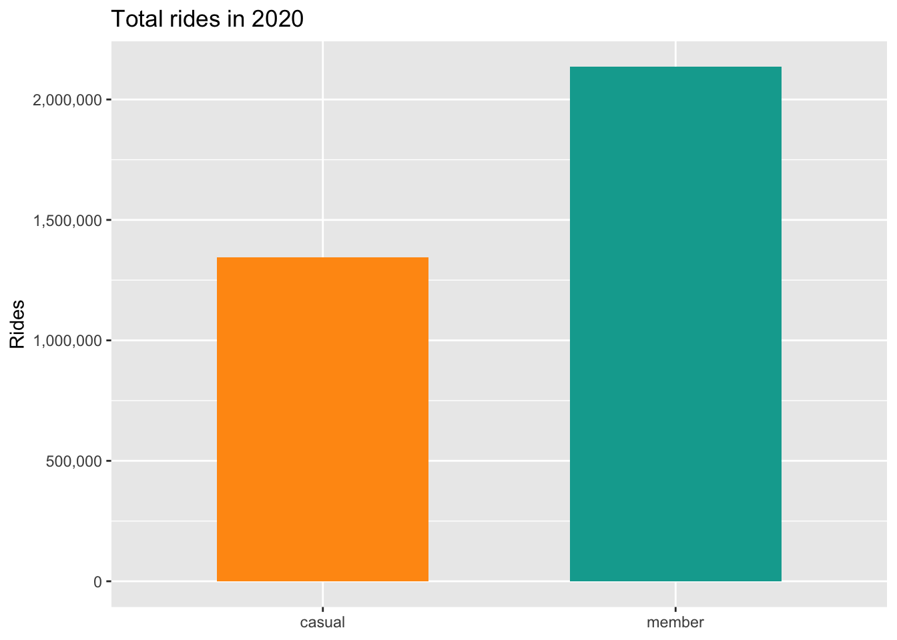
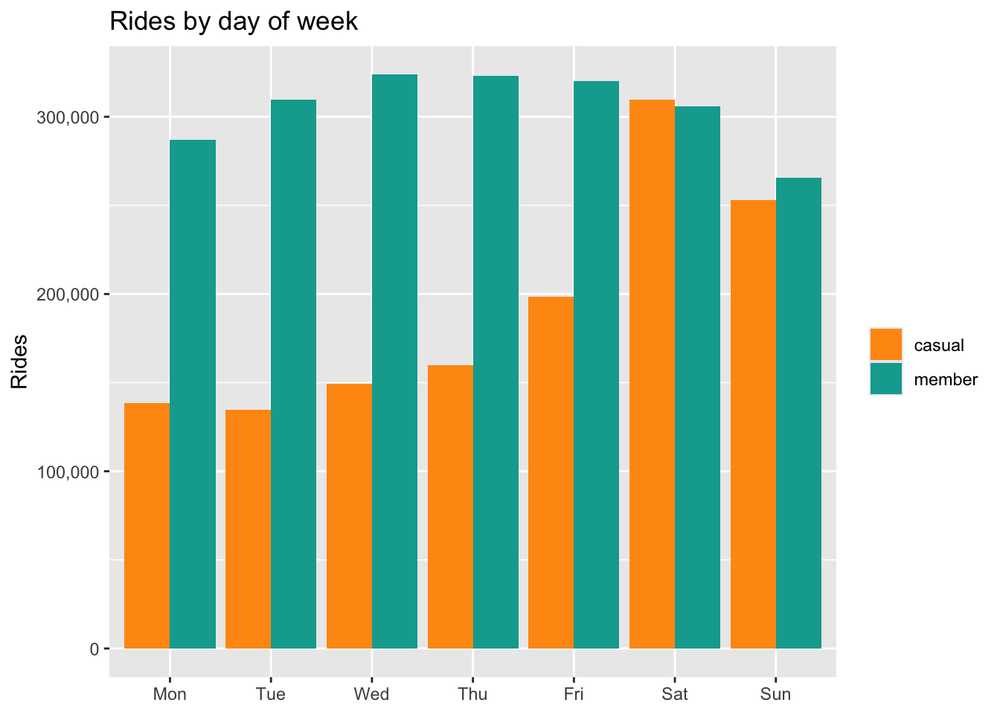
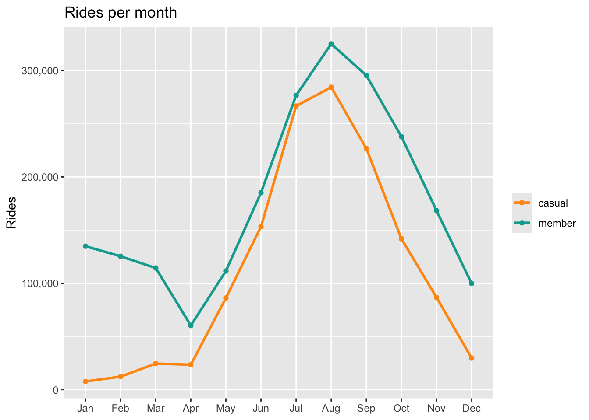
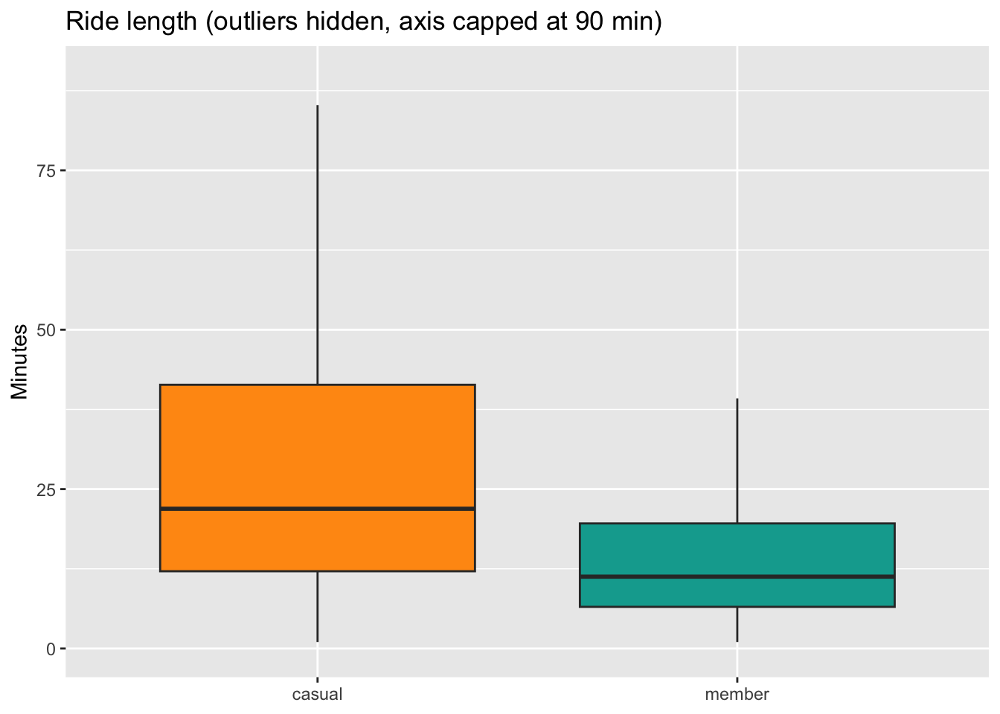

Code
library(tidyverse)
library(lubridate)library(tidyverse)
library(lubridate)All twelve files share the same columns, but start_station_id and end_station_id change type partway through the year, which makes bind_rows() fail. Reading every column as text first, then converting, avoids that.
files <- c(
"data/Divvy_Trips_2020_Q1.csv",
sprintf("data/2020%02d-divvy-tripdata.csv", 4:12)
)
trips_raw <- files |>
map(\(f) read_csv(f, col_types = cols(.default = col_character()))) |>
bind_rows()
glimpse(trips_raw)Rows: 3,541,683
Columns: 13
$ ride_id <chr> "EACB19130B0CDA4A", "8FED874C809DC021", "789F3C21E4…
$ rideable_type <chr> "docked_bike", "docked_bike", "docked_bike", "docke…
$ started_at <chr> "2020-01-21 20:06:59", "2020-01-30 14:22:39", "2020…
$ ended_at <chr> "2020-01-21 20:14:30", "2020-01-30 14:26:22", "2020…
$ start_station_name <chr> "Western Ave & Leland Ave", "Clark St & Montrose Av…
$ start_station_id <chr> "239", "234", "296", "51", "66", "212", "96", "96",…
$ end_station_name <chr> "Clark St & Leland Ave", "Southport Ave & Irving Pa…
$ end_station_id <chr> "326", "318", "117", "24", "212", "96", "212", "212…
$ start_lat <chr> "41.9665", "41.9616", "41.9401", "41.8846", "41.885…
$ start_lng <chr> "-87.6884", "-87.666", "-87.6455", "-87.6319", "-87…
$ end_lat <chr> "41.9671", "41.9542", "41.9402", "41.8918", "41.889…
$ end_lng <chr> "-87.6674", "-87.6644", "-87.653", "-87.6206", "-87…
$ member_casual <chr> "member", "member", "member", "member", "member", "…trips <- trips_raw |>
mutate(
started_at = ymd_hms(started_at),
ended_at = ymd_hms(ended_at),
ride_min = as.numeric(difftime(ended_at, started_at, units = "mins")),
month = month(started_at, label = TRUE),
day_of_week = wday(started_at, label = TRUE, week_start = 1),
weekend = day_of_week %in% c("Sat", "Sun")
)
n_before <- nrow(trips)
trips <- trips |>
filter(
!is.na(started_at), !is.na(ended_at), !is.na(member_casual),
ride_min > 1, # under a minute: false start or redock
is.na(start_station_name) | start_station_name != "HQ QR" # Divvy test/maintenance station
)
n_after <- nrow(trips)I removed 63,015 of 3,541,683 rows (1.8%): rides with missing timestamps or rider type, rides of one minute or less, and rides starting at Divvy’s HQ test station. I kept rides with a missing station name, because those are mostly electric bikes parked away from a dock and dropping them would bias the sample.
A few rides last for days, which looks like bikes that weren’t docked properly. Instead of dropping them, I report medians alongside means so a handful of outliers don’t drive the conclusions.
trips |>
summarise(
max_hours = max(ride_min) / 60,
p99_minutes = quantile(ride_min, 0.99),
median_min = median(ride_min)
)# A tibble: 1 × 3
max_hours p99_minutes median_min
<dbl> <dbl> <dbl>
1 2608. 160. 14.4rides_by_group <- trips |>
count(member_casual) |>
mutate(share = n / sum(n))
rides_by_group# A tibble: 2 × 3
member_casual n share
<chr> <int> <dbl>
1 casual 1343606 0.386
2 member 2135062 0.614ggplot(rides_by_group, aes(member_casual, n, fill = member_casual)) +
geom_col(width = 0.6, show.legend = FALSE) +
scale_y_continuous(labels = scales::comma) +
scale_fill_manual(values = c(casual = "#FF9912", member = "#03A89E")) +
labs(title = "Total rides in 2020", x = NULL, y = "Rides")
by_day <- trips |>
count(member_casual, day_of_week)
ggplot(by_day, aes(day_of_week, n, fill = member_casual)) +
geom_col(position = "dodge") +
scale_y_continuous(labels = scales::comma) +
scale_fill_manual(values = c(casual = "#FF9912", member = "#03A89E")) +
labs(title = "Rides by day of week", x = NULL, y = "Rides", fill = NULL)
weekend_share <- trips |>
group_by(member_casual) |>
summarise(weekend_share = mean(weekend))
weekend_share# A tibble: 2 × 2
member_casual weekend_share
<chr> <dbl>
1 casual 0.419
2 member 0.268by_month <- trips |>
count(member_casual, month)
ggplot(by_month, aes(month, n, colour = member_casual, group = member_casual)) +
geom_line(linewidth = 1) +
geom_point() +
scale_y_continuous(labels = scales::comma) +
scale_colour_manual(values = c(casual = "#FF9912", member = "#03A89E")) +
labs(title = "Rides per month", x = NULL, y = "Rides", colour = NULL)
duration_summary <- trips |>
group_by(member_casual) |>
summarise(
median_min = median(ride_min),
mean_min = mean(ride_min),
total_hours = sum(ride_min) / 60
)
duration_summary# A tibble: 2 × 4
member_casual median_min mean_min total_hours
<chr> <dbl> <dbl> <dbl>
1 casual 21.9 48.1 1077374.
2 member 11.3 16.0 568523.ggplot(trips, aes(member_casual, ride_min, fill = member_casual)) +
geom_boxplot(outlier.shape = NA, show.legend = FALSE) +
coord_cartesian(ylim = c(0, 90)) +
scale_fill_manual(values = c(casual = "#FF9912", member = "#03A89E")) +
labs(title = "Ride length (outliers hidden, axis capped at 90 min)",
x = NULL, y = "Minutes")
(Check each line against the rendered numbers and charts before sharing.)